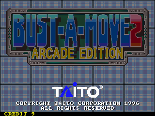
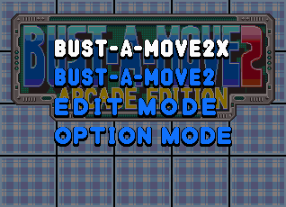
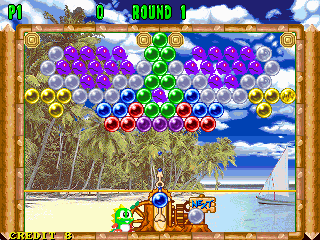

名稱：泡泡龍2／泡泡龍方塊2 (Bust-A-Move 2: Arcade Edition／Bust-A-Move Again／Puzzle Bobble 2，英文版) 簡介：TAITO 1995年出品的泡泡龍益智解謎遊戲，1996年移植至DOS，由Acclaim代理發行 [待補]。


保護：光碟，破解碼（破解後無背景音樂）： BM2.EXE E8 E1 06 00 00 C7 05 90 90 90 90 90 -- --